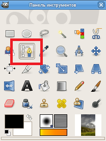

Контуры. Инструмент Контуры
Контуры
Инструмент Контуры весьма удобен и позволяет аккуратно очерчивать самые сложные по форме контуры на изображении, создавать выделения - кривые, которые можно редактировать, сохранять, импортировать, экспортировать; с их помощью можно рисовать и создавать геометрические фигуры. Форму контура можно менять не только во время создания, но и после.
Контуры создаются и редактируются с помощью инструмента Контуры. Контуры, как слои и каналы, являются компонентами изображения. Когда изображение сохраняется в родном для GIMP формате XCF, все контуры сохраняются вместе с ним. У контуров есть свой Диалог.
Кривые GIMP принадлежат к математическому типу, называемому "Кривые Безье". Практическими терминами это означает, что они определяются управляющими точками и рычагами. "Управляющая точка" это точка, через которую проходит контур. "Рычаги" определяют направление контура, когда он входит или покидает управляющую точку: каждая точка имеет два прикреплённых к ней рычага.
Контуры могут быть очень сложными. Если вы создаёте их вручную с помощью инструмента "Кривые", обычно они содержат не более дюжины управляющих точек (часто намного меньше); но если вы создадите их с помощью преобразования выделения в контур, или преобразованием текста в контур, результат с лёгкостью может содержать сотни управляющих точек, или даже тысячи.
Список контуров изображения может быть просмотрен с помощью диалога Кривые. Если вы хотите переместить контур с одного изображения в другое, вы можете сделать это с помощью копирования и вставки, используя всплывающий диалог в диалоге "Контуры", или с помощью перетаскивания значка из диалога "Контуры" в желаемое окно изображения.
Каждый компонент контура может быть открытым или замкнутым: "замкнутый" означает, что последняя управляющая точка соединена с первой управляющей точкой.
Если вы преобразуете контур в выделение, любой открытый компонент автоматически преобразовывается в замкнутый с помощью соединения прямой линией последней управляющей точки с первой.
Сегменты контура могут быть прямыми или изогнутыми. Контур, целиком состоящий из прямых называется "многоугольным". Когда вы создаёте сегмент контура, он создаётся прямым, поскольку рычаги управляющей точки размещаются прямо на управляющей точке, с нулевой длиной, что и создаёт сегмент - прямую линию.
На рисунке представлены четыре примера контуров в GIMP:
- замкнутый и многоугольный;
- открытый и многоугольный;
- замкнутый и изогнутый;
- комбинация из прямых и изогнутых сегментов.
Подсказка
* Закрытый контур может быть преобразован в выделение.
* Открытый или замкнутый контур может быть обведён, что позволяет рисовать на изображении разнообразными методами.
Одна приятная вещь в контурах это то, что они очень легкие в плане потребления памяти, особенно в сравнении с изображениями. Контур требует памяти только для хранения координат управляющих и рычагов: 1Кб памяти достаточно для размещения весьма сложного контура, но не достаточно для размещения RGB слоя даже размером 20x20 пикселей. Поэтому можно содержать буквально сотни контуров в изображении без каких-либо стрессовых нагрузок для вашей системы.
GIMP позволяет вам преобразовывать выделение изображения в контур; также вы можете преобразовывать контуры в выделения. Дополнительную информацию о принципах работы этого механизма смотрите в разделе Выделение.
Когда вы преобразовываете выделение в контур, контур точно следует "муравьиной дорожке". Выделение является двухмерным элементом, но контур это одномерный элемент, поэтому не существует способа преобразования выделения в контур без потери информации. Любая информация о частично выделенных областях (например, растушёвка) будет утеряна, когда выделение превращается в контур. Если контур преобразовывается обратно в выделение, результатом будет либо выделение всего, либо ничего, в зависимости от того, что было получено в результате выполнения пункта "Резкость" из меню выделения.
Активация инструмента Контуры

Инструмент можно вызвать несколькими способами:
* через меню изображения Инструменты → Контуры
* щелчком по значку инструмента на панели инструментов
* с помощью клавиши быстрого доступа B.
Параметры инструмента Контуры
Обычно параметры инструмента отображаются в панели, присоединенной к панели инструментов, как только вы активируете его.
Если их там нет, вы можете перейти к этой панели, выбрав в меню пункт Окна → Панели → Параметры инструмента.
Режим Создание
По умолчанию этот инструмент находится в режиме Создание.
Контур создаётся последовательными щелчками по точкам изображения. Создаваемые контрольные точки (узлы) можно передвигать, предварительно щелкнув по ним. Между узлами находятся сегменты контура.
Подсказка
Чтобы быстро закрыть контур (кривую), нажмите клавишу Ctrl и щёлкните исходный контрольный узел. Можно использовать кнопку Выделение из контура или Контур в выделение в диалоге контуров.
Подсказка
Два рычага по умолчанию расположены симметрично. Однако при первом же дальнейшем перемещении каждый узел становится рассинхронизированным с другим. Клавиша Shift возвращает рычагам симметричность.
Функции, доступные в этом режиме
* Добавление узлов: если активный узел (маленький пустой круг после щелчка по узлу) находится в конце контура, значок курсора содержит символ «+», а щелчок им по активному узлу создает новый узел, соединённый сегментом с предыдущим.
Если активный узел находится на контуре, курсор содержит квадрат, и щелчок по нему создает новый компонент контура. Этот новый компонент не зависит от других, но принадлежит контуру, как видно в диалоге. Нажатие клавиши Shift приводит к принудительному созданию такого компонента.
* Смещение одного или нескольких узлов: над узлом курсор становится крестом из четырёх стрелок. Нажмите узел и переместите его. Можно выбрать несколько узлов, удерживая нажатой клавишу Shift. Удерживая нажатыми клавиши Ctrl+Alt, вы можете передвигать весь контур как выделение.
* Коррекция положения рычагов: перейдите к режиму правки узлов; после этого рычаги узлов станут доступны. Переместите рычаги для сгиба кривой. Нажатие клавиши Shift делает рычаги симметричными.
* Изменение сегмента: когда указатель мыши оказывается над сегментом контура, значок указателя превращается в крест из четырёх стрелок. Щелчком и перемещением вы можете изогнуть сегмент. Как только сегмент начнёт меняться, по обоим концам сегмента появятся рычаги. Нажатие клавиши Shift делает рычаги симметричными.
Режим Правка
Правка выполняет функции, которые не доступны в режиме Создания. В этом режиме можно работать только над существующим контуром. Вне контура (или по всему изображению, если нет контура) курсор становится маленьким перечёркнутым кругом и редактирование невозможно. При этом редактировать можно только узловые точки.
* Добавление сегмента между двумя узлами: щелчком активируйте узел с одного конца контура. Значок указателя мыши примет форму двух объединенных пустых окружностей, означающую объединение узлов. Щёлкните второй узел, чтобы связать их. Это полезно для соединения незакрытых компонентов.
* Удалить сегмент из контура: нажимая комбинацию клавиш Shift+Ctrl, укажите на сегмент. Курсор становится «-». Щёлкните, чтобы удалить сегмент.
* Добавление узла к контуру: укажите на сегмент. Значок указателя мыши сменится на «+». Щёлкните по точке, в которую хотите добавить узел.
* Удалить узел: нажимая комбинацию клавиш Shift+Ctrl, укажите на узел. Курсор становится «-». Щёлкните, чтобы удалить узел.
* Добавление рычага к узлу: укажите на узел. Значок указателя мыши примет форму руки. При перетаскивании узла появится рычаг. Нажатие клавиши Shift делает рычаги симметричными. Удаление рычага из узла: удерживая нажатыми клавиши Shift+Ctrl, переместите указатель мыши к точке над рычагом. Значок указателя сменится на ожидаемый символ минуса. Щёлкните для удаления рычага.
Режим Перемещение
· Перемещение — позволяет перемещать компоненты контура по одному или все разом. Просто щелкните контур и перетащите его.
Если у контура несколько компонентов, перемещен будет только выбранный. При щелчке и перетаскивании вне вне контура передвигаются все компоненты. Клавиша Shift также включает перемещение всех компонентов.
Многоугольники
Опция Многоугольник дает возможность делать вновь создаваемые узловые точки остроугольными. При выборе этого параметра сегменты становятся только прямыми. Рычаги не отображаются, а сегменты не гнутся при их перемещении. Под ней располагаются две основные кнопки, позволяющие добиться определенного результата от создания контура в целом, — Выделение из контура и Обводка по контуру.
Выделение из контура
Кнопка Выделение из контура позволяет автоматически создать выделение, форма которого совпадает с формой контура. Эта кнопка создаёт выделение, основанное на текущем контуре и отображаемое обычными «марширующими муравьями». Заметьте, что контур остаётся нетронутым: активный инструмент — всё ещё Контуры, так что этот контур можно изменять, не меняя выделение, ставшее независимым. Если выбрать другой инструмент, контур станет невидимым, он останется в диалоге контуров, и его можно активировать снова. Если контур не закрыт, GIMP закроет его прямой линией.
При наличии какого-либо контура на изображении щелкните по данной кнопке. Контур не пропадет, но появится выделение. Теперь у нас уже есть два объекта воздействия — контур и выделение. Например, можно продолжить корректировать контур, затем снова нажать кнопку Выделение из контура, и в результате старое выделение заменится на новое в соответствии с редактированием контура.
Подсказка
* Нажатие клавиши Shift добавит новое выделение к уже существующему.
* Нажатие клавиши Ctrl вычтет новое выделение из существующего.
* Комбинация клавиш Shift+Ctrl оставит пересечение выделений.
Обводка по контуру
Опция Обводка по контуру позволяет создать растровое изображение, выражающееся в обводке контура. При нажатии на эту кнопку появляется окно Обводка по контуру.
Контуры никак не меняют конечный вид изображений до тех пор, пока их не обводят, вызвав:
* диалог Правка → Обвести контур... из меню изображения или контекстного меню в палитре «Контуры»;
* либо по нажатию кнопки «Обвести контур» в диалоге параметров инструмента Контур.
Вызвав диалог «Обводка контура» любым из указанных способов, вы можете выбрать способ создания и внешний вид обводки: стили линий и инструмент, используемый для обводки (включая такие необычные для этой задачи как Штамп, Палец, Стёрка и т.д.).
Здесь нужно настроить некоторые параметры будущей обводки, а затем получить ее.
Необходимо выбрать здесь один из двух режимов создания линии: Линия штриха или Использовать один из инструментов. В случае выбора первого варианта — Линия штриха — мы настраиваем следующие параметры штриха:
· параметр Толщина линии отвечает за толщину линии обводки по контуру. Чем выше значение параметра, тем толще создаваемая вдоль контура линия;
· Один цвет и Текстура позволяют задать внешний вид штриха. В случае выбора варианта Один цвет штрих будет монотонным, для варианта Текстура в качестве штриха будет использована текстура;
· Стиль линии — эта опция содержит отдельный свиток параметров, позволяющих настраивать стиль создаваемой линии.
Здесь настраиваются:
· Стиль концов — можно выбрать форму концов линии контура.
· Стиль угла — можно выбрать форму углов и загибающихся частей контура.
· Предел острия — можно настроить степень заострения линии.
· Шаблон пунктира — здесь можно вручную нарисовать шаблон пунктира линии.
· Тип пунктира — выпадающий свиток, позволяющий выбрать один из предлагаемых видов пунктирных линий.
· Сглаживание — позволяет сглаживать форму линии контура.
В случае выбора варианта Линия штриха можно полностью отредактировать форму и внешний вид штриха, повторяющего имеющийся контур.
Вариант Использовать один из инструментов позволяет создать имитацию применения вдоль линии контура одного из списка предлагаемых инструментов.
Например, при выборе варианта Аэрограф создается имитация проведения аэрографом вдоль линии контура.
Текстовый блок, созданный с помощью инструмента "Текст", может быть преобразован в контур с помощью кнопки "Создать кривую из текста", расположенную в параметрах инструмента "Текст". Это может быть полезно в нескольких случаях, включая следующие:
* Обводку контура, что даёт вам большие возможности для создания необычного вида текста.
* Что более важно, преобразование текста в контур, затем изменение контура, и в заключении, обводка контура, или преобразование в выделение и заливка, что чаще всего даёт намного более высококачественный результат, чем отрисовка текста, как слоя, и преобразование данных о пикселях.
Таким образом, инструмент Контуры применяется в основном в двух целях: для аккуратного создания выделения и для создания своеобразных «чертежей» штрихами или инструментами. Основным его плюсом является возможность детального редактирования формы линии контура, чего не позволяют сделать иные инструменты выделения или рисования.